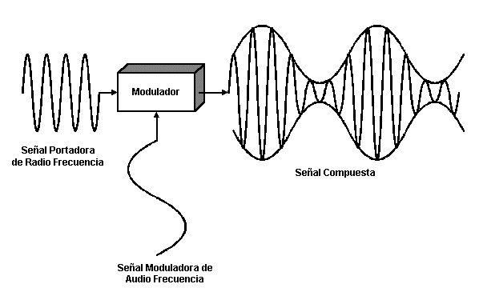
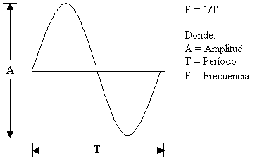
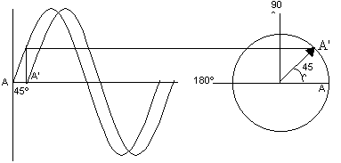

Modulacion
 Descargar
Descargar 

Modular una señal consiste en modificar alguna de las características de esa señal, llamada portadora, de acuerdo con las características de otra señal llamada moduladora.

El objetivo de modular una señal, es tener un control sobre la misma. El control se hará sobre ciertos elementos característicos de una oscilación continua; estos son modificados según la forma de onda de la señal que se desea transmitir.
Los parámetros o magnitudes fundamentales de una señal analógica son:
- Amplitud
- Frecuencia
- Fase


Tipos de modulación por parámetros:
- Modulación por Amplitud (AM): Este es un caso de modulación donde tanto las señales de transmisión como las señales de datos son analógicas.
- Modulación por Frecuencia (FM): Este es un caso de modulación donde tanto las señales de transmisión como las señales de datos son analógicas y es un tipo de modulación exponencial.
- Modulación por Fase (PM): Este también es un caso de modulación donde tanto las señales de transmisión como las señales de datos son analógicas y es un tipo de modulación exponencial al igual que la modulación de frecuencia.
Tipos de modulación por impulsos:
PCM (PULSE CODE MODULATION): Modulación por código de impulsos. Es un proceso digital de modulación para convertir una señal analógica en un código digital. La señal analógica se muestrea, es decir, se mide periódicamente.
PWN (PULSE WIDTH MODULATION): La modulación por ancho de pulsos (MAP O PWM, siglas a la ingle Pulse-Width Modulation) de una señal o fuente de energía es una técnica en la que se modifica el siclo de trabajo de una señal periódica (una sinusoidal o una cuadrada).
PAM (PULSE AMPLITUDE MODULATION): Es la más sencilla de las modulaciones digitales. Consiste en cambiar la amplitud de una señal, de frecuencia fija, en función del símbolo a transmitir.
PPM (PULSE POSITION MODULATION): Es un tipo de modulación en la que una palabra R bits es codificada por la transmisión de un único pulso que puede encontrarse en alguna de las 2m posiciones posibles.
Código Morse:
Es un medio de comunicación basado en la transmisión y recepción de mensajes empleando sonidos o rayos de luz y un alfabeto alfanumérico compuesto por puntos y rayas. Aunque este código surgió en el siglo XIX, su empleo es perfectamente utilizable hoy en día cuando la existencia de condiciones atmosférica adversas no permite el empleo de otros medios más desarrollados como, por ejemplo, la transmisión de la voz.
Regla nemotécnica grafica:
Otra regla para mejorar el aprendizaje del código Morse, recurre a las fuertes presencia que tienen las imágenes de las letras. A fin de ser el recurso de ayuda a la memoria.
Regla nemotécnica:
- La inicial de la palabra clave es la letra correspondiente.
- El número de vocales que contiene la palabra clave indica la longitud de la codificación en Morse de dicha letra.
- Si la vocal es una O se sustituye por una raya (-)
- Si se trata de cualquier otra vocal se sustituye por un punto (.)
- Al sustituir solo se tendrá en cuenta los puntos y rayas obtenidas hasta la totalidad de la longitud en Morse.